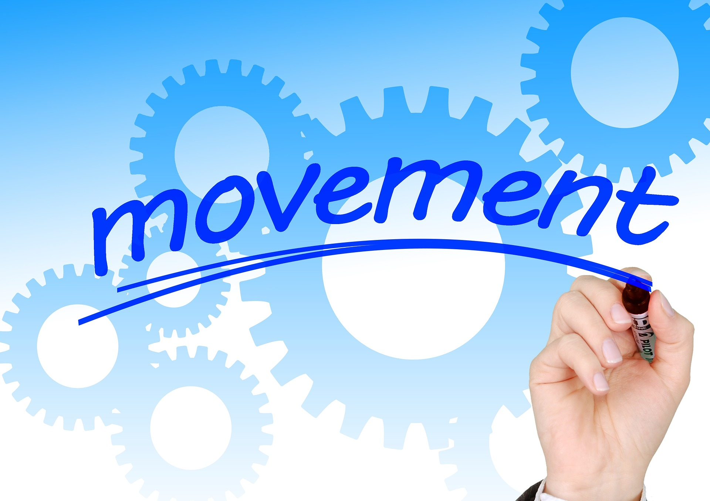

En esta época de inicio de año muchas organizaciones e individuos se esfuerzan por planear y contar en sus equipos con una dirección que les permita alcanzar las metas y aunar esfuerzos durante el año.
La dirección siempre será fundamental en la planeación, los grandes estrategas buscan sacar el potencial en sus equipos de trabajo y bajar los resultados objetivos a la metodologia SMART, que le permitan generar la trazabilidad de sus acciones. Un objetivo SMART se puede definir por sus siglas en ingles en:
- S M A R T
- Specific (específico)
- Mensurable (medible)
- Achievable (alcanzable)
- Relevant (relevante)
- Timely (temporal)
Siempre vallas a definir un objetivo ten en cuenta en la creación de los mismo lo siguiente: su línea de tiempo, ¿Como lo mides?, ¿Es real eso que estas planteando? O ¿como lo vas alcanzar?, ¿es relevante y congruente con mis metas anuales?. Tanto las organizaciones tienen planeación a nivel organizacional, como en lo personal para nuestro desarrollo humano es indispensable planear tus metas.
Además de la dirección, la creación es fundamental cuando planeamos buscamos crear o diseñar un norte u horizonte nuevo o reajustar hacia donde dirigirnos esa motivaciones personales y organizacionales que deben ser únicas e intransferible, porque ninguna organización es similar a otra en su cultura y gestión empresarial, así como ningún ser humano debería ser copia de otro, el ADN esta cargado del contexto de los sueños, intereses y voluntad del colectivo para alcanzarlo a nivel organizacional y en lo personal de la invitación a ser únicos, sin buscar imitar a nadie donde tus valores y tu deseo de transcender te permita ir mas allá de los limites que tu mente crea.
Acorde con Chivaneto (2017) a través de la planeación se debe maximizar los resultados y minimizar las deficiencias. En lo anterior, es fundamental definir esfuerzos e impactos. En tus acciones estratégicas o las empresariales lo fundamental es concebir como indica el autor qué hacer, como, para qué, cuándo, dónde, por quién y por cuánto.
Sumado a la reflexión del autor quiero dejar acá, mis tres palabras importantes al momento de planear: Dirección, creación y acción. Y sugerirte una Metodologia útil para establecer tus objetivos SMART.
Recordándote que nada a nivel personal y empresarial es esporádico, requiere un esfuerzo diario, continuo, flexible y también dinámico por alcanzar los logros del plan estratégico desde lo organizacional y/o desde ese mapa de sueño desde el desarrollo humano, es importante dar pasos conscientes para imprimirle sentido en tu autogestión y autorregulación para dirigir tus proyecciones en accionables diarios que te permitan alcanzar la gran MEGA personal u organizacional que te propongas para tu próximo año, recomendándote planeaciones cortas y dividas en resultados claves capaces de ser monitoreados de manera sencilla en tiempo y permita agregar valor.
Webgrafia:
- Chivaneto.,I. (2017) Planeación Estratégica, Fundamentos y aplicaciones. Tercera Edición. Mc Graw Hill.